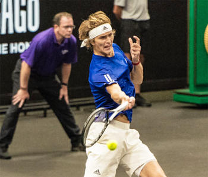
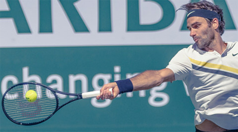
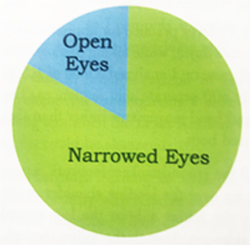
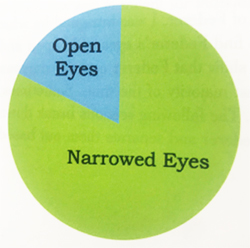
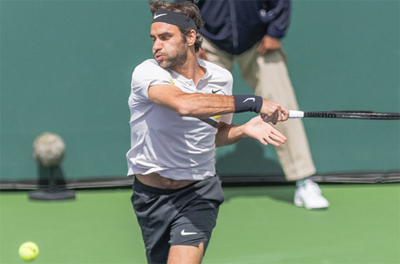
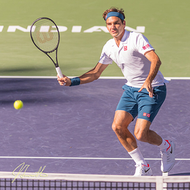
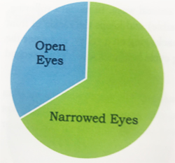
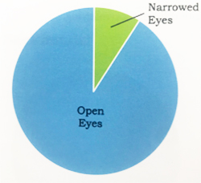

← Bài trước: Ball Watching - Part 1 | 🏠 Classic Lessons Trang chủ | Bài tiếp: → Ball Watching - Part 3
Ball Watching - Part 2
Thư viện kiến thức quần vợt thống nhất — Cơ bản, Phân tích kỹ thuật, Thư viện tham khảo và nhiều hơn nữa
Ball Watching - Part 2
Paul Hamori, MD

Không phải tất cả các tay vợt hàng đầu đều sử dụng kỹ thuật quan sát bóng như Roger Federer.
Có nhiều kỹ thuật quan sát bóng tuyệt vời trong quần vợt ngoài Federer. Có những tay vợt tuyệt vời nhưng lại có kỹ thuật quan sát bóng kém.
Học thuyết cho rằng bạn có thể chơi quần vợt xuất sắc mà không cần kỹ thuật quan sát bóng tốt. Nhưng tôi tin rằng kỹ thuật quan sát bóng của Federer là nền tảng cho phong cách chơi đẹp của anh và những kỳ tích quần vợt mà chúng ta thấy khi anh lên sân.
Chúng ta đều quen thuộc với tư thế nghiêng đầu bên của anh. Nhưng điều mà nghiên cứu của tôi tìm ra là có một điều bổ sung mà tôi không tin rằng đã từng được nghiên cứu.
Đó là sự thu hẹp đáng kể của đôi mắt anh xung quanh điểm tiếp xúc. Hơn nữa, trên một tỷ lệ đáng kể các cú đánh của anh, anh thường đóng mắt sau khi tiếp xúc.
Đúng vậy. Mắt thu hẹp và/hoặc đóng lại. Ngạc nhiên chưa? Đọc tiếp.
Dữ liệu
Như tôi đã nói trong phần 1 của loạt bài này (Nhấn vào đây) tôi đã xem Federer thi đấu trực tiếp hơn 40 lần. Nhưng để tìm ra kỹ thuật quan sát bóng của anh, tôi cần có bằng chứng.
Tôi đã phát triển điều này bằng cách chụp ảnh anh trong buổi tập. Tôi đã xem anh tập luyện 2 giờ mỗi ngày trong 2 ngày liên tiếp, chụp liên tục ảnh với tính năng burst của máy ảnh DSLR.
Sau đó tôi đã phân tích dữ liệu. Kết quả ra là 300 chuỗi cú đánh riêng biệt với tổng cộng 1500 bức ảnh tĩnh. Kết quả là bất ngờ - thậm chí còn gây sốc.

Mắt của Federer thu hẹp xung quanh điểm tiếp xúc của hầu hết các cú đánh của anh.
Ngạc nhiên về đôi mắt
Khi tôi bắt đầu phân tích các bức ảnh của mình, tôi kỳ vọng sẽ tìm thấy mắt của Federer mở rộng và theo bóng. Tuy nhiên, khá bất ngờ, các bức ảnh tôi chụp lại cho thấy anh thực sự thu hẹp đôi mắt khi tiếp cận điểm tiếp xúc hầu hết thời gian.
Thậm chí còn ngạc nhiên hơn, đôi khi anh đóng mắt sau khi tiếp xúc. Vì vậy, tôi đã phân tích những gì xảy ra với đôi mắt của anh theo từng cú đánh dựa trên hơn 125 chuỗi ví dụ.

Cú thuận tay

Cú trái tay
Các biểu đồ này cho thấy tỷ lệ thu hẹp mắt của Roger trên các cú đánh cơ bản của anh.
Cú đánh cơ bản

Sau khi tiếp xúc, Federer đóng mắt trên một tỷ lệ đáng kể các cú đánh cơ bản của anh.
Trên các cú đánh cơ bản của anh, mắt của anh vẫn mở rộng 17% thời gian. Nhưng trên 82% các cú đánh cơ bản, anh rõ ràng thu hẹp đôi mắt.
Và trên một tỷ lệ đáng kể các cú đánh cơ bản, anh đóng mắt sau khi tiếp xúc. 16% thời gian trên cú thuận tay và 13% thời gian trên cú trái tay.
Cú bắt lưới
Có hiện tượng tương tự khi đến lượt các cú bắt lưới của anh, mặc dù tôi đã tìm thấy sự khác biệt đáng kể giữa các cú bắt lưới thuận tay và trái tay của anh.
Rõ ràng, các cú bắt lưới khác với các cú đánh cơ bản ở nhiều mặt. Trước hết, chu kỳ đánh bóng giống như 1 giây thay vì 2 giây.
Mở vợt ra sau ngắn hơn có nghĩa là tốc độ đầu vợt chậm hơn. Ngoài ra, toàn bộ cú đánh xảy ra trước mặt người chơi.

Trên cú bắt lưới thuận tay, Federer giữ mắt mở rộng trên đa số các quả bóng - 91% thời gian.
Tôi nghĩ những yếu tố này có thể làm cho việc theo dõi bóng vợt và nhìn thấy điểm tiếp xúc dễ dàng hơn. Nhưng có những sự khác biệt kỹ thuật đáng kể giữa hai bên.
Cú bắt lưới trái tay giống như một phiên bản rút ngắn của cú cắt trái tay. Trên cú bắt lưới trái tay, Federer thu hẹp mắt 66% thời gian. 41% thời gian anh đóng mắt sau khi tiếp xúc.
Cú bắt lưới thuận tay có ít tương đồng hơn với cú thuận tay cơ bản - ngay cả với cú thuận tay cắt. Tôi nghĩ điều này khiến nó trở thành một cú đánh khó khăn và ít đáng tin cậy hơn.
Nhưng bất kể lý do gì, dữ liệu của tôi cho thấy kết quả về mắt trên cú bắt lưới thuận tay khá khác biệt. Federer thu hẹp mắt chỉ 9% thời gian và tôi không ghi lại một ví dụ nào về việc mắt đóng lại. 91% thời gian mắt của anh vẫn mở rộng.
Một yếu tố giảm thiểu có thể là số lượng ít ví dụ về cú bắt lưới thuận tay mà tôi đã ghi lại so với các cú đánh khác. Nhưng có thể ít có ví dụ nào về cú bắt lưới thuận tay sẽ tiếp cận với cú bắt lưới trái tay hoặc các cú đánh cơ bản.

Cú bắt lưới trái tay

Cú bắt lưới thuận tay
Sự khác biệt về mắt trên cú bắt lưới trái tay và thuận tay.
Một điểm chung giữa các cú bắt lưới và các cú đánh cơ bản là, bất kể mắt, Federer quay đầu sang bên và giữ nguyên vị trí cho đến sau khi tiếp xúc, không quay lại ngay lập tức theo bóng.
Vậy tất cả điều này có nghĩa là gì? Chúng ta đã thấy giới hạn của thị giác con người trong phần 1. Nhấn vào đây. Bây giờ chúng ta biết rằng cách sử dụng mắt của Federer có những đặc điểm hoàn toàn bất ngờ là thu hẹp và thậm chí đóng mắt.
Làm thế nào chúng ta có thể chuyển đổi thông tin này thành một kỹ thuật từng bước để phát triển kỹ thuật quan sát bóng theo phong cách Federer? Hãy theo dõi.

Tôi bắt đầu viết cuốn sách là cơ sở cho bài viết này - The Art and Science of Ball Watching - vào tháng 8 năm 2019 và hoàn thành vào tháng 1 năm 2021. Trong một nghĩa nào đó, tuy nhiên, tôi đã làm việc trên nó từ khi tôi bắt đầu chơi quần vợt năm năm mươi lăm tuổi khi mới 5 tuổi. Ở trường trung học, tôi đã chơi bốn năm quần vợt đại học và các giải đấu quần vợt trẻ USTA được cấp phép. Tôi có thể đã đạt đến mức 4.5-5.0. Tôi đã cân nhắc việc chơi quần vợt đại học nhỏ, nhưng vào thời điểm đó, tôi đã mệt mỏi với môn thể thao và biết rằng các nghiên cứu tiền y của tôi sẽ không cho phép thời gian cho quần vợt đại học.
Nhưng quần vợt đã trong máu tôi, và tôi bắt đầu chơi lại với sự đam mê sau khi tốt nghiệp y khoa. Trong thời gian này, tôi thực sự bắt đầu nghiên cứu các khía cạnh kỹ thuật của trò chơi.
Ý tưởng của tôi cho cuốn sách bắt đầu với các ý tưởng kỹ thuật mà tôi đã thảo luận bằng cách xem các tay vợt xuất sắc trong nhiều thế hệ. Cuối cùng, tôi kết luận rằng việc tiếp xúc vợt với bóng tốt phụ thuộc vào kỹ thuật quan sát bóng tốt. Tôi viết cuốn sách để tự học cách nhìn thấy tiếp xúc vợt với bóng và hy vọng nó có thể giúp bạn làm điều tương tự.
Nguồn: tennisplayer.net lưu trữ — Ball Watching - Part 2.docx (Thư viện giảng dạy của John Yandell, 2002-2022). Trích xuất và hiển thị dưới dạng HTML cho Tennis Future Lab.